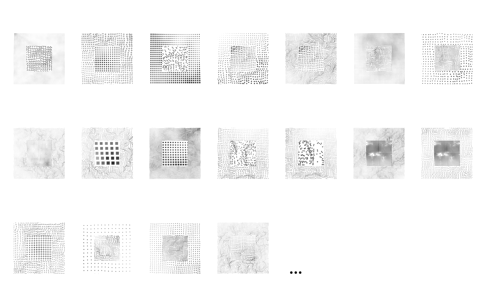

Intro: Eine neue visuelle Identität für das ISR
»von der abstrakten Literatur über die intellektuelle Diskussion und die […] Massenkommunikationsmittel bis ins öffentliche und schließlich auch ins handelnde Bewußtsein« Mit diesen Worten beschrieb Rainer Mackensen, Professor für Soziologie an der TU Berlin, 1970 die Bandbreite einer »integrierenden Planung«. Für deren Umsetzung plädierte er für die Gründung eines Instituts für Stadt- und Regionalplanung, die im Mai 1972 beschlossen wurde. Offiziell besteht das Institut für Stadt- und Regionalplanung (ISR) seit dem 1. April 1974. Ein halbes Jahrhundert nach diesen Gründungsbestrebungen bekräftigt das ISR seinen Anspruch, sich nicht nur intern zu vernetzen, sondern auch nach außen zu wirken. Zu diesem Zweck hat das LABOR K eine neue visuelle Identität entwickelt, die wir Ihnen auf dieser Seite vorstellen möchten. Scrollen Sie durch die Bilderstrecke oder schauen Sie sich das Video an – und tragen Sie am Ende der Präsentation mit Ihrem Feedback zur finalen Ausarbeitung bei.
Scrollen Sie einfach weiter, um durch die Präsentation zu gehen. Diese Website ist für große Bildschirme konzipiert. Falls Sie einen kleinen Bildschirm nutzen, empfehlen wir die Video-Präsentation.
Entwicklung eines visuellen Prinzips: Herleitung
Wie kann man die Planung von Stadt und Region abstrakt repräsentieren?
Entwicklung eines visuellen Prinzips: Konzeption
Der Name »Institut für Stadt- und Regionalplanung« vereint die Praxis verschiedener (Planungs)Maßstäbe sowie zwei Elemente (die Stadt und die Region), die sich gegenseitig bedingen. Das visuelle Prinzip des Logos muss also beide Elemente und ihre Maßstäblichkeit kommunizieren können.
Die urbanen und regionalen Landschaften können durch abstrahierte Muster abgebildet werden. Diese Muster werden durch einen Algorithmus so programmiert, dass sie aussehen, als wären sie Momentaufnahmen einer kontinuierlichen Planung. Das Muster der Stadt (in der Mitte) ist dabei größer als das Muster der Region (außen). In dieser Form bildet das visuelle Prinzip beide Planungsmaßstäbe ab.
Um das Logo zusammen mit der Wortmarke (»Institut für Stadt- und Regionalplanung« bzw. »ISR«) benutzen und anordnen zu können, bietet sich eine quadratische Form an. Diese ikonische Form (ein Quadrat im Quadrat) kann auch als allgemeines Prinzip in der visuellen Sprache benutzt werden.

Das oben dargestellte Prinzip erlaubt die Generierung unendlich vieler Logos. Diese Repräsentation wird der Realität gerecht, in der sich jede Stadt und Region unterschiedlich darstellt. Zudem spiegelt sie den prozesshaften Charakter der Disziplin wider.